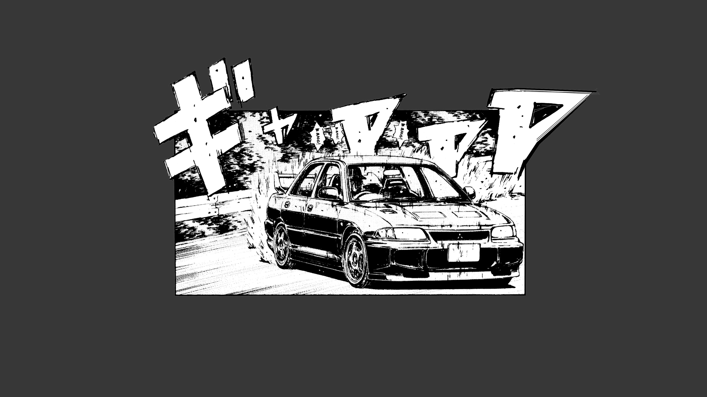

What is Initial D?
Initial D is a Japanese anime and manga series about the world of illegal street racing. The story follows a high school student named Takumi, who works at his family's tofu shop during the day and becomes a legendary street racer at night. The series is known for its intense racing scenes and intricate character development, and it explores themes like friendship, ambition, and self-discovery. Even if you're not a fan of racing, you might still enjoy Initial D for its relatable characters and exciting storyline. As a newcomer to anime, Initial D is a great introduction to the medium, and it's a classic series that many anime fans have enjoyed over the years.
Why is it good?
There are many reasons why Initial D is considered to be a great anime series. Here are some of the key reasons:
- Exciting Racing Scenes: One of the biggest draws of Initial D is its thrilling racing scenes. The series is known for its detailed depictions of cars and driving techniques, which make the races feel realistic and intense. The races are also set to a pumping Eurobeat soundtrack, which adds to the excitement and energy of the scenes.
- Complex Characters: The characters in Initial D are well-developed and multi-dimensional. Takumi, the main character, goes through significant growth and development over the course of the series, and the supporting characters are also given their own story arcs and motivations. This makes the characters feel more relatable and interesting to watch.
- Unique Setting: Initial D is set in the mountainous regions of Japan, which adds to the uniqueness of the series. The winding roads and steep hills create a challenging and exciting environment for the street races, and the rural setting adds to the sense of isolation and community that the characters experience.
- Influence on Car Culture: Initial D has had a significant influence on car culture, not only in Japan but around the world. The series has popularized the use of drifting in racing and has inspired a new generation of car enthusiasts. Its impact on popular culture cannot be overstated.
- The Soundtrack:the soundtrack of Initial D is one of the most iconic and recognizable features of the series. The music is heavily influenced by the Eurobeat genre, which originated in Europe in the 1980s and became popular in Japan in the 1990s. Eurobeat is characterized by its fast tempo, energetic beats, and synthesizer melodies.
- The soundtrack of Initial D includes a mix of original compositions and licensed songs from popular Eurobeat artists such as Dave Rodgers, Max Coveri, and Mega NRG Man. The music is often synchronized with the racing scenes to create a sense of excitement and intensity. Each race has its own unique soundtrack, which helps to add to the suspense and drama of the series.
- In addition to the Eurobeat music, the series also features other genres of music such as rock, pop, and hip-hop. The diverse range of music in the series helps to create a vibrant and dynamic atmosphere, and is one of the reasons why the soundtrack is so beloved by fans of the series.
- Overall, Initial D is a great anime series because of its exciting racing scenes, well-developed characters, unique setting, and influence on car culture. It's a classic series that has stood the test of time and remains popular among anime fans today.

Where to begin?
As a fan of Initial D, I can say that one of the things I love about this series is that it's pretty easy to follow. Unlike other popular shows like Gundam that have different timelines and parallel stories going on, Initial D has a straight plot that progresses in a logical order. This makes it easier for newcomers to the series to get into the story and follow the events as they unfold. Whether you're a fan of cars or not, the thrilling races and intense action will keep you hooked, while the memorable characters and iconic soundtrack will leave a lasting impression.
The following seasons and extra content are consider canon in the overall series and should be watched in this order to get the fullest out of the series. "Extra Stage" & Extra Stage 2 aren't needed but add more to the story that's part of what was shown in 1st stage.
Initial D First Stage (Season 1)
Release Date: 1998 | Episodes: 26 | Studio: Studio Gallop & Studio Comet
1st Stage is an anime that follows the story of a high school student named Takumi Fujiwara, who discovers his natural talent for street racing. Through various challenges and races, he navigates the world of street racing on the mountain roads of Mt. Akina, and learns about the importance of teamwork, friendship, and personal growth. The 1st Stage builds up to a major race that will put Takumi's driving skills to the test and potentially have significant consequences for him and his friends.
Initial D Second Stage (Season 2)
Release Date: 1999 | Episodes: 13 | Studio: Pastel
The second stage of Initial D continues to follow Takumi Fujiwara as he faces new challenges and rivals in the world of street racing. After his victory against the Red Suns, Takumi must now defend his title against even stronger opponents, including the highly skilled racers from the Todo School. Along with his friends from the Akina Speed Stars, Takumi must navigate a series of intense races and confront personal struggles as he strives to become the ultimate street racer. With new twists and turns, the second stage offers even more heart-pumping action, intricate car maneuvers, and character development.
Initial D Extra Stage
Release Date: 2000 | Episodes: 2 OVA | Studio: Pastel
"Extra Stage" is a two-episode OVA of Initial D that focuses on the relationship between Mako and Iketani. Mako is a skilled driver and one of the members of the racing team "Impact Blue," while Iketani is a member of the local racing team "Akina SpeedStars." The story follows Iketani as he tries to get closer to Mako, who he has a crush on, and helps her with some car trouble. As they spend time together, they begin to develop feelings for each other, but Mako faces a difficult decision that could impact her future as a street racer. Overall, "Extra Stage" provides an interesting character study and expands on the world of Initial D beyond the main protagonist Takumi.
Initial D Third Stage
Release Date: 2001 | Episodes: Movie | Studio: Deen
Third Stage is a feature-length anime film that picks up the story after the end of the Second Stage. In this installment, Takumi and his racing team, Project D, face their biggest challenge yet when a rival racing team, the Emperors, comes to Gunma to challenge them. Meanwhile, Takumi is struggling with his feelings for his longtime love interest Natsuki and trying to decide what to do about their relationship. As the stakes get higher and the racing becomes more intense, Takumi must find a way to stay focused and overcome his opponents in order to prove himself as the best street racer in Gunma. The film is filled with heart-pumping races, dramatic plot twists, and memorable characters that fans of the series will surely love.
Initial D Fourth Stage (Season 4)
Release Date: 2004-2006 | Episodes: 24 | Studio: A.C.G.T
In the fourth stage of Initial D, Takumi and his team face new challenges as they race against talented opponents from all over Japan. The story primarily revolves around the battles between Project D, a team formed by Ryosuke Takahashi, and other street racing teams. Takumi also faces personal struggles as he navigates his growing relationship with Natsuki and his own identity as a racer. As the stakes get higher, Takumi must confront new opponents, new courses, and new limitations in his own abilities. Overall, the fourth stage provides an intense and exciting continuation of the series, with plenty of high-speed racing action and character development.
Initial D Extra Stage 2
Release Date: 2008 | Episodes: 50 Minute OVA | Studio: A.C.G.T
In Extra Stage 2, Mako and Sayuki, the two girls from the racing team Impact Blue, are the focus of the story. As they take on new racing challenges and face unexpected twists and turns, they also have to grapple with their own personal feelings and relationships. Through their experiences, the story explores the themes of passion, perseverance, and growing up, and showcases the thrilling world of street racing. Without giving away any spoilers, "Extra Stage 2" provides a satisfying continuation of the original series while introducing new elements and perspectives.
Initial D Fifth Stage (Season 5)
Release Date: 2012-2013 | Episodes: 14 | Studio: SynergySP
The 5th stage of Initial D follows Takumi as he returns to racing after a hiatus, now facing challenges from new opponents who are also highly skilled. As he navigates these new battles, Takumi also begins to confront his own driving limitations and works to overcome them. Alongside his racing pursuits, he grapples with his relationships and responsibilities, including a new love interest and his growing sense of duty to his family's tofu shop. As the stage progresses, Takumi's driving skills continue to be tested, leading to intense races and surprising revelations about his abilities and potential.
Initial D Final Stage
Release Date: 2014 | Episodes: 4 | Studio: SynergySP
"Final Stage" is the last installment of the "Initial D" anime series and picks up where "Fifth Stage" left off. The story follows street racer Takumi Fujiwara and his continued involvement in the racing world as he takes on new challenges, including a highly anticipated race against a formidable opponent. As the race approaches, Takumi must also navigate the complications of his personal life and relationships with those around him. The stage builds to an intense and emotional climax as Takumi faces his toughest competition yet and must draw on all of his skill and determination to come out on top. The stage also offers closure for fans of the series and ties up various plot threads from previous seasons.
Extra Content To Watch
Initial D Battle Stage
Release Date: 2014 | Episodes: 4 | Studio: SynergySP
"Final Stage" is the last installment of the "Initial D" anime series and picks up where "Fifth Stage" left off. The story follows street racer Takumi Fujiwara and his continued involvement in the racing world as he takes on new challenges, including a highly anticipated race against a formidable opponent. As the race approaches, Takumi must also navigate the complications of his personal life and relationships with those around him. The stage builds to an intense and emotional climax as Takumi faces his toughest competition yet and must draw on all of his skill and determination to come out on top. The stage also offers closure for fans of the series and ties up various plot threads from previous seasons.